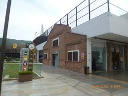
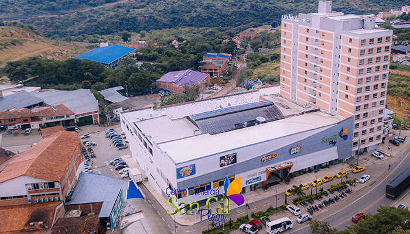

Centro Comercial El Puente
Un centro comercial moderno con una amplia variedad de tiendas, incluyendo ropa, calzado, electrónica, hogar y decoración.
- Ubicación: Cl. 12 # 12 - 123
- Horario: Lunes a sábado: 9:00 am a 8:00 pm, domingo: 9:00 am a 8:00 pm
- Calificación de Google: 4.5 estrellas (5698 reseñas)
- Teléfono: (607) 7244644
- Parqueadero 2 módulos de pago Parqueadero cubierto y vigilado con servicio de smart parking. Mensualidad para carros y motos, convenios con hoteles y empresas. Primeros quince minutos gratis. Horario ingreso: Lunes a jueves 6 AM - 11 PM Viernes y sábados 6 AM - 12 AM Domingos o festivos 6 AM - 11 AM Tarifa hora: Carro: 2.300 / Moto: 1.100
- Punto de Información Registre sus facturas y participe por fabulosos premios. Ubicado en el Lobby de la Torre Empresarial. Horario: Lunes a jueves 9 AM - 8 PM Viernes y sábados 9 AM - 9 PM Domingos 9 AM - 8 PM
- Auditorio y salones múltiples para eventos Amplios salones con capacidad máxima de 300 personas para la realización de eventos. Informes y cotizaciones: 724 4644 / 317 657 4494 Conozca sus instalaciones: CEEP - Centro de Eventos El Puente
- Enfermería Contamos con auxiliares de enfermería que prestan el servicio de primero auxilios a nuestros visitantes. Informes: 317 432 0138
- Baños para personas con discapacidad Plataformas y baños especiales con accesibilidad para personas con discapacidad.
- Zonas de descanso Espacios como plazoletas, paseos y pasillos amplios con sofás, poltronas y sillas
- Página web
Centro Comercial San Gil Plaza
Un centro comercial más grande y tradicional, con una mezcla de tiendas locales e internacionales.
- Ubicación: Derivación a, Barichara
- Horario: Lunes a sábado: 7:00 am a 9:00 pm, domingo: 8:00 am a 9:00 pm
- Calificación de Google: 4.3 estrellas (2488 reseñas)
- Teléfono: 7242943
- Quienes somos: Centro Comercial San Gil Plaza hizo apertura en el año 2013 generando gran porcentaje de empleo en el municipio. Imponiéndose a lo largo de estos años como el EPICENTRO DEL ENTRETENIMIENTO en toda la provincia guanentina, brindando un ambiente familiar, social y cultural como siempre comprometidos principalmente a la atención de nuestros clientes y visitantes ofreciéndoles la mejor experiencia de entretenimiento y compra.
- Misión: En el centro comercial San Gil Plaza estamos comprometidos con el entretenimiento de nuestros clientes y visitantes brindando un espacio de diversión familiar y social con actividades innovadoras que generen experiencias inolvidables logrando su fidelidad y confianza en nuestros productos y servicios ofrecidos con compromiso y calidad .
- Visión: El Centro Comercial San Gil Plaza busca ser en el 2025 reconocido a nivel departamental y nacional por ofrecer una combinación estratégica a nivel comercial, gastronómico, cultural, social y de entretenimiento para la familia y la Comunidad en general, fortaleciendo continuamente los espacios empresariales y de entretenimiento con los más altos estándares de innovación y calidad en los servicios, con un equipo estratégico de colaboradores, aliados y proveedores comerciales y de servicios que poseen compromiso y responsabilidad social con nuestra comunidad generando valor y fidelización en nuestra región.
- Página web